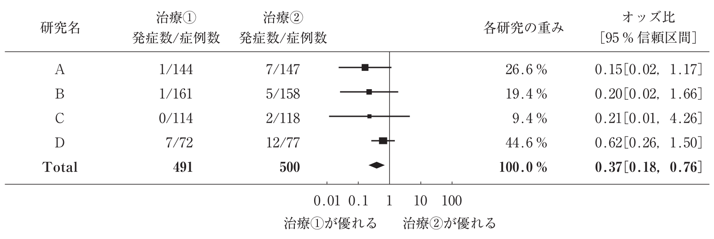

3 メタ分析
3.1 キーワード
世の中には、似たような研究もたくさんあります。中には結果が相反している場合もあります。メタ分析 (meta-analysis)とは、同一のアウトカムを扱っている複数の研究をプール (pool) し、再解析を行うことです。
メタ分析は通常、系統レビュー (systematic review)とセットになります。まず、系統レビューで同一のアウトカムの研究を網羅的に検索します。次に、検索した論文から適格基準や本文の内容により、メタ分析する論文を選別します。
研究を行う本人が患者や対象者の集団に働きかけて直接データを収集しないのはどれか。
a コホート研究
b 症例対照研究
c ランダム化比較試験
d ケースシリーズ研究
e メタ分析〈メタアナリスシス〉
ちょっと問題文がわかりづらいですが、メタ分析において、データは患者ではなくて研究論文から取ります。正解は e となります。
アウトカムは、有病率やオッズ比などさまざまなものをプールすることが可能です。
各研究の値とプール推計値は、フォレストプロット (forest plot) で示されることもあります。医師国家試験で出題されたフォレストプロットを見てみましょう。
ある研究結果の表を示す。

この研究方法はどれか。
a 横断研究
b コホート研究
c 症例対照研究
d 症例集積研究
e メタ分析〈メタアナリシス〉
このフォレストプロットは、研究 A 〜 研究 D という４つの研究があり、すべてをプールしたものが再下段に描かれています。つまり、正解は e となります。
フォレストプロットの中央の列では、四角く塗りつぶされている部分がそれぞれの研究での値で、四角の大きさは重みを表しています。あたいから伸びているヒゲは 95% 信頼区間を表しています。オッズ比と 95% 信頼区間の数値は一番右の列に記載されています。
この図から、各研究においてはオッズ比は 0.15 から 0.62 でしたが、いずれも有意差があるとは言えませんでした。プールした結果、オッズ比は 0.37 となり、有意差がありました。
さて、このようにプールされた結果はどの程度信頼できるでしょうか？その指標の一つが異質性 (heterogeneity) です。
ある疾患について 3 件の研究があり、プール有病率が、50% としても、元となる有病率が 10%、50%、90% である場合と、45%、50%、55% である場合では、信頼度が異なるのはわかるかと思います。前者のような時、異質性が高いと言います。
異質性は、Cochran Q 検定または \(I^2\) で評価します。Cochran Q 検定は、通常の p 値で評価します。\(I^2\) は、0%〜100% の値を取り、数値が大きいほど異質性が高くなります。
メタ分析の論文のガイドラインは、PRISMA 宣言です。
3.2 有病率のメタ分析
論文の例: Kojima G, Iliffe S, Taniguchi Y, Shimada H, Rakugi H, & Walters K (2017). Prevalence of frailty in Japan: a systematic review and meta-analysis. Journal of Epidemiology, 27(8), 347-353.
Vetrano DL, Palmer KM, Galluzzo L, Giampaoli S, Marengoni A, Bernabei R, & Onder G (2018). Hypertension and frailty: a systematic review and meta-analysis. BMJ open, 8(12), e024406.